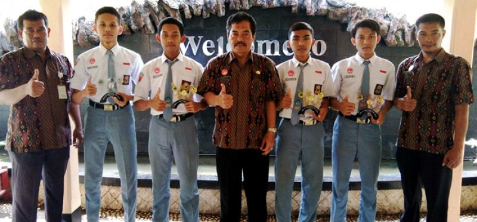

BERITA

Indeks Berita
SMKN 2 Kendal Berhasil Raih Empat Medali Tingkat Jateng
SMKN 2 Kendal Berhasil Raih Empat Medali Tingkat Jateng

Senin (27/8) pagi, ribuan siswa SMK itu berbaris rapi untuk menciptakan rekor baru pada buku catatan rekor Leprid.
Pada hari itu, mereka melakukan penciptaan rekor 'Gerakan Periksa Kerapian 14 Gerakan dengan Jumlah Peserta Terbanyak.
Dalam penciptaan rekor itu, sebanyak 1.436 siswa baik putra dan putri dilibatkan. Siswa dan siswi itu nampak rapi dan kompak menampilkan gerakan periksa kerapian. Tak sedikitpun gerakan yang cacat ditampilkan oleh siswa dan siswi SMK Bina Utama itu.
Bahkan yel-yel yang mereka nyanyikan pun juga mereka tunjukkan dengan kompak dan rapi. Selaras dengan aksi mereka, pakaian seragam yang mereka kenakan pun juga rapi dan bersih.
Kepala SMK Bina Utama, Susandari menerangkan penciptaan rekor ini muncul dari kegiataan pembinaan karakter siswa di sekolahnnya.
Dalam kegiatan itu, pihak sekolahnya menggandeng Koramil 01 Kendal untuk turut serta. Pada kegiatan Pembinaan Mental dan Fisik (Bintalsik) kepada para murid muncul hal menarik saat ribuan siswanya menunjukan gerakan periksa kerapian.

KENDAL - Siswa SMKN 2 Kendal Ahmad Nur Fatkkhul Cholbi dan Puji Sulistiono meraih Juara I Lomba Kompetensi Siswa Tinggkat Nasional Di Solo ( 15 - 19 mei 2017 dan Arif Susanto merebut Juara I Tingkat Nasional dalam ajang Lomba Inovasi SMK dengan karya berjudul " Gyroscopic Suspension " sebuah inovasi sistem suspensi mobil agar lebiyh nyaman dan aman.
Komandan Kodim 0715 Kendal Letkol Inf. Piter Dwi Ardianto selaku Inspektur Upacara Hari Kebangkitan Nasional di Kabupaten Kendal menyerahkan penghargaan langsung pada siswa SMK berprestasi tersebut usai kegiatan Upacara Hari Kebangkitan Nasional Ke 109 Tingkat Kabupaten Kendal tahun 2017, Senin (22/5) di Alun -Alun Kendal.
Dalam penyerahan penghargaan tersebut, Letkol Inf. Piter didampingi Sekretaris Daerah Kabupaten Kendal Ir. Bambang Dwiyono, MT, Kepala Dinas Kominfo Drs. Muryono, Spd, MPd dan Kepala Dinas Pendidikan Dan Kebudayaan Drs. Agus Rifai.
Juara pada LKS Tingkat Nasional akan mewakili Indonesia untuk maju dalam kejuaraan World Skill Competition WSC ( Lomba Kompetensi Siswa Tingkat Internasional di Abudabi, Uni Emirat Arab, Oktober 2017 mendatang.
Sementara, karya inovasi siswa SMK Muhammadiyah 4 Sukorejo yang berjudul " Gyroscopic Suspension " adalah suatu sistem suspensi kendaraan roda empat yang bertujuan menciptakan kenyamanan dan keamanan terutama saat melewati tikungan dan jalan yang berkontur miring sehingga penumpang dapat terhindar dari keadaan tergincang dan terombang ambing yang bisa menyebabkan rasa mual dan muntah. ( heDJ / Kominfo )

KENDAL – SMKN 2 Kendal berhasil menyumbangkan medali terbanyak untuk Kabupaten Kendal dengan jumlah empat medali, dalam Lomba Ketrampilan Siswa (LKS) SMK tingkat Jateng, yang dipusatkan di Kota Surakarta, 14 – 17 September lalu.
Empat medali itu terdiri atas dua emas, satu perak, dan satu perunggu. Selain itu, SMKN 2 Kendal juga meraih juara harapan dua dan harapan tiga. Sementara itu, Kabupaten Kendal dalam lomba tersebut mengerahkan 94 orang yang terdiri atas 41 siswa, 39 guru pendamping serta 14 kepala sekolah, dan berhasil meraih tujuh medali.
Kepala SMKN 2 Kendal, Drs Maryono, mengatakan, mata pelajaran yang dilombakan sebanyak 54 mata pelajaran dan Kendal hanya mengikuti 39 mata lomba. Sedangkan SMKN 2 Kendal mengikuti delapan lomba yaitu Mechatronics, Refrigeneration, Autocad Building, Joinery, Cabinet Making, Bricklaying, Industrial Control, dan Wiring Installation.
Dari delapan mata lomba itu, medali yang berhasil disabet yakni satu emas dari Mechatronics diperoleh Rahmat Aji Widodo dan Kholil Abdur Rasyid, satu emas dari lomba Refrigeration atas nama A Nur Fatkhul Cholbi, satu perak dari Autocad Building diraih Thomi Mustaghfirin, dan satu perunggu dari Joinery didapat Muhtarom. Sementara juara harapan dua diraih M Darmawan Widiyanto pada mata lomba Cabinet Making, dan juara harapan tiga diperoleh Muhamad Pujiono untuk bidang Bricklaying. Mereka yang meraih medali emas akan mewakili Jateng dalam lomba yang sama di tingkat nasional. LKS SMK tingkat nasional menurut rencana digelar Mei 2017.
“Dari delapan mata lomba tersebut, kami mengirimkan sembilan anak. Khusus mechatronics berupa tim, sehingga diikuti dua anak. Sementara untuk mata lomba industrial control dan wiring installation, anak-anak belum berhasil meraih juara,” ujarnya Selasa (20/9), didampingi Koordinator Tim, Bambang Mulyanto.
Menurut Maryono, perolehan medali tahun ini mengalami peningkatan dibandingkan tahun sebelumnya. Pada tahun lalu, siswa-siswi SMKN 2 Kendal hanya meraih tiga medali yang terdiri atas satu emas dan dua perunggu. Persiapan telah dilakukan sejak peserta didik duduk di kelas X. Mereka yang berbakat terus dipantau dan diberi pembekalan, bahkan sering diikutkan berbagai lomba. “Ketika akan mengikuti lomba, dilakukan seleksi, untuk kemudian mendapatkan pembekalan lebih intensif selama kurang lebih satu bulan,” ungkapnya.
Sementara itu, Wakahumas SMKN 2 Kendal, Setyo Raharjo, menyatakan, dua siswa mereka juga meraih Juara I lomba Bahasa Korea tingkat Jateng yang digelar di Semarang. Dua siswa tersebut Bayu Adji Syahputra dan Ahmad Rofiq, yang dibimbing oleh seorang guru Aji Rizki Amalia. Kedua siswa itu, nantinya akan maju ke tingkat nasional, pada 10 – 15 Oktober mendatang. “Kami berharap anak-anak kelak bisa menjadi juara di tingkat nasional, sehingga bisa maju ke tingkat internasional. Prestasi ini mudah-mudahan bisa menjadi motivasi bagi adik-adik kelasnya, agar minimal bisa meraih prestasi yang sama,” ucapnya..(05a/hms).